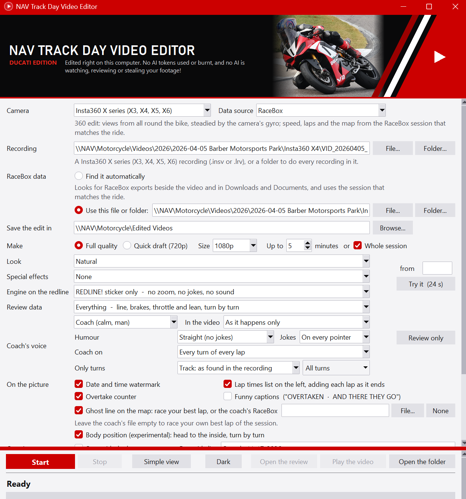

NAV Track Day Video Editor
Drop in your Insta360 track-day video and your RaceBox file. Get back a finished video with lap times, speed, lean angle, a track map, and a coach who goes through every turn with you.
Download for Windows Free · Windows 10 or 11 · about 370 MBNo account, no sign-up. Everything runs on your own computer and nothing is uploaded.

Install it in 3 steps
- Unzip the download Open your Downloads folder, right-click the file you just downloaded and pick Extract All, then Extract.
Tip: don't open the files from inside the zip. Unzip first, or the install won't work.
- Double-click "Install on Windows" In the new folder that opens, double-click this file:
Install on Windows.cmdWindows may show a blue box saying "Windows protected your PC". That is normal for small free programs. Click More info, then Run anyway.
Windows protected your PCMicrosoft Defender SmartScreen prevented an unrecognized app from starting...
More info
Run anyway - Open it When it says it's finished, you'll find NAV Track Day Video Editor on your Desktop and in the Start menu. Open it, pick your video, and press Start.
Nothing else to install. It comes with everything it needs and doesn't need the internet.
It doesn't need administrator rights. It takes about 850 MB of disk space once installed.
What you need
- A Windows 10 or 11 PC. An NVIDIA graphics card makes it fastest, but any PC works. It just takes longer.
- Your Insta360 video file (it starts with VID_ and ends in .insv). Keep the LRV_ file the camera made next to it.
- Optional: your RaceBox file (.csv or .vbo) for that session, in the same folder. Without it the video still works and speed is estimated.
Questions
- How do I update to a new version?
- Download again from this page and run Install on Windows again. Your videos and settings stay put.
- How do I remove it?
- Windows Settings > Apps > Installed apps > NAV Track Day Video Editor > Uninstall.
- Is there a Mac version?
- Not ready yet. This download is for Windows only.
- Something went wrong. What do I do?
- The notes at the bottom of the program's window say what it was doing when it stopped. Copy them and report the problem here.
Instruction manual (PDF, 2 pages) · What's new · All versions